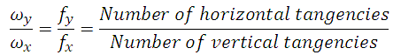
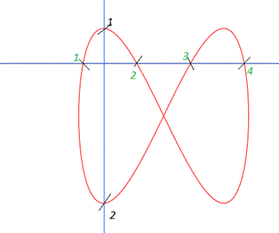

When the frequencies of two sinusoids being superimposed is different arbitrary curves are formed we can calculate the ratio of their frequencies by the given formula.
Horizontal and vertical tangencies can be calculated by counting intersection with the x and y axes respectively.
If frequency of one signal is known then that of other can be calculated.

Example:

fy/fx = 4/2 = 2